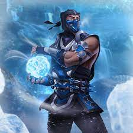

Сюжет
Некоторое время спустя после поражения Шиннока от рук Кэйси, Рейден мучает павшего Старшего Бога в поврежденной палате Джинсей.
Бог Грома, теперь с более темной личностью из-за повреждения Джинсея, объявляет Шинноку, что он больше не будет милосерден и уничтожит всех врагов Земного царства, прежде чем они смогут атаковать.Рейден угрожает ему, говоря, что он будет первым.
Шиннок напоминает ему, что он не может убить старшего Бога, но Рейден заявляет, что есть участь хуже смерти и обезглавливает его.Рейден говорит отрубленной, но все еще живой голове Шиннока, что доставит его Лю Кенгу в Преисподнюю в качестве предупреждения и телепортируется.
Хранительница времени, Кроника, появляется в палате, раздраженная на Рейдена за нарушение
баланса времени, уничтожив Шиннока.Она подходит и говорит ему, что дуга Вселенной изгибается по ее воле и что это только вопрос времени.
тавшая от неповиновения землян, Кроника принесет порядок во Вселенную любыми необходимыми средствами.
Scorpion

History
У минулому був людиною, зараз — привид. В історії Mortal Kombat, Ханзо Хасаші (він же Скорпіон) був ніндзя і головою клану Ширай Рю.
Ворогував з кланом Лін Куей, головою якого був Бі Хан.Був убитий ним же.
Після цього некромант Куан-Чі запропонував Ханзо співпрацю — Куан-Чі воскрешає душу Хасаші, а Ханзо іде на турнір Мортал Комбат і вбиває там Саб-Зіро (Бі Хан).Після переродження в пеклі Ханзо уже називає себе Скорпіон, бо на гербі Ширай Рю був намальований саме скорпіон.
У одній з ігор (DC vs Mortal Kombat) Скорпіон стає правителем пекла.Особливими здібностями Скорпіона є гарпун, виготовлений з прив'язаного до мотузки кунаю, який вилітає і летить у потрібному напрямку з його долоні, і вогняний череп, який випускає з рота вогонь, коли Скорпіон знімає маску.
Sub-Ziro
History
Старший з двох братів Саб-Зіро, на ім'я Бі-Хань був введений в першу гру Mortal Kombat, де він бере участь у турнірі «Смертельна битва».
Йому було наказано Грандмастером клану Лін Куей вбити господаря турніру Шан Цунг, а і забрати його скарб, але він не виконав свою місію, і був убитий привидом Скорпіона, який прагнув помститися за свою смерть. Бі-Хань стає нежиттю на ім'я Нуб Сайбот.У прямому продовженні Mortal Kombat II, місце Бі-Ханя займає його брат Куай Лян. Після смерті брата на першому турнірі, Лін Куей посилають Куай Ляна, щоб виконати незавершене завдання — вбити Шан Цзуна.
У Mortal Kombat 3 молодший Саб-Зіро тікає від Лін Куей, які хотіли перетворити своїх воїнів в кіборгів. Три кіборги вбивці були запрограмовані, щоб знайти та знищити Саб-Зіро, який до цього часу отримав бачення від Райдена і погодився приєднатися до повстання проти нової загрози.
На додаток до поточного Саб-Зіро, Ultimate Mortal Kombat 3 і Mortal Kombat Trilogy включають грабельного персонажа, відомого як Класичний Саб-Зіро.
Його біографія стверджує, що, хоча він, як вважали, помер після першого Mortal Kombat, але все-таки повернувся, щоб спробувати знову вбити Шан Цунга.
Проте, його закінчення стверджує, що він не оригінальний Саб-Зіро, а невідомий воїн, який був відсутній у попередньому турнірі.
У Mortal Kombat Mythologies: Sub-Zero, яка служить приквелом до першої гри Mortal Kombat, чаклун Куан Чі, скориставшись послугами Лін Куей, наймає Саб-Зіро, щоб знайти стародавній амулет.
За допомогою Саб-Зіро діставши амулет Куан Чи відправляється назад в Преісподюю, а Саб-Зіро дізнається від Райдена, що це був ключ до звільнення Шиннока.У фінальному протистоянні Саб-Зіро вдається зірвати з шиї Шіннока амулет. Потім Саб-Зіро повертає його Райдену.
Kabal

History
Біографія Колись член клану Чорний Дракон, Кабал кинув свою злочинну життя і поставив свої бойові навички для більш позитивних цілей.
Він приєднався до Нью-Йоркської міської поліції, щоб боротися зі злочинним елементом, якому він колись служив.Цей перехід допоміг полегшити біль від похмурих спогадів.
foto place